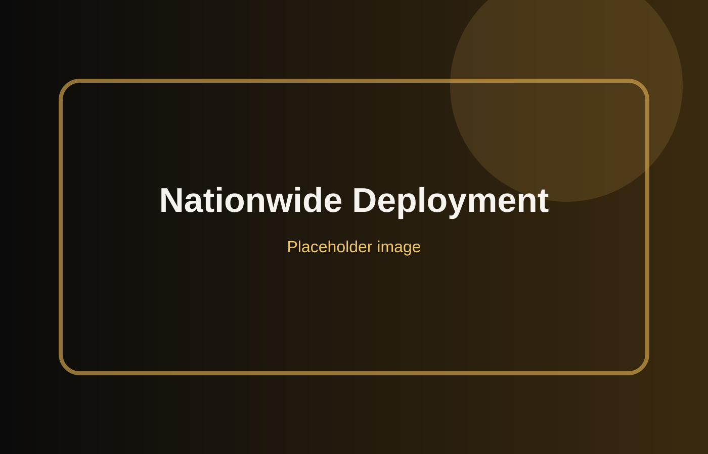

🚚
Disaster Relief
Forward-deployed mobile kitchens for emergency crews and recovery teams.
Learn more →Rapid, reliable, and scalable meal service for disaster relief, remote crews, large work sites, government operations, and major events.
Emergency Culinary Solutions was founded to deliver rapid-response food service solutions during times of crisis. From our first deployment after Hurricane Michael to operations across the U.S., ECS supports responders, crews, and communities when dependable meals matter most.
Our mobile kitchens are designed to operate in demanding environments and can support everything from small teams to thousands of people per day.
Read More
From disaster response to workforce meal planning, ECS creates field-ready meal programs that keep people fueled and operations moving.
Forward-deployed mobile kitchens for emergency crews and recovery teams.
Learn more →Hot meals for construction, utility, restoration, and remote field crews.
Learn more →Consulting, logistics, menus, supplier mapping, and shift-based meal planning.
Learn more →Large-scale catering for events, camps, relief operations, and festivals.
Learn more →Compliant meal support for local, state, and federal operations.
Learn more →Fast mobilization, reliable service, and dependable logistics under pressure.
Contact us →
Through self-sustaining mobile kitchens and expert logistics, ECS ensures teams, communities, and emergency responders receive high-quality meals anytime, anywhere.
“Chef Daniel and his team prepared three meals a day for our crews restoring Mexico Beach after Hurricane Michael.”
Brian Schupbach
“ECS scaled from 500 to 1,500 meals per day without compromising quality or service.”
Kevin Przytula
“Thank you for your dedication to supporting the first responder community.”
Public Safety Partner
Tell us about your operation and our team will help plan the right food service solution.
Request a Quote